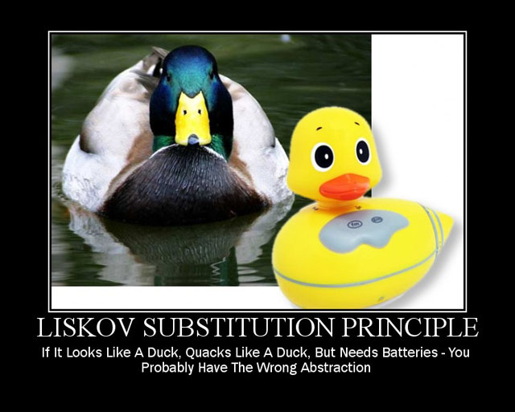

Test-Driven Development et Clean Architecture
Test-Driven Development et Clean ArchitectureUn exo pour suivreRappel sur un paradigme : Programmation Orientée ObjetEncapsulationHéritageAbstractionPolymorphismeConclusionLes 5 principes S.O.L.I.D.Single Responsibility PrincipleOpen-Closed PrincipleLiskov Substitution PrincipleInterface Segregation PrincipleDependency Inversion PrincipleClean Architecture par Uncle Bob (Robert C. Martin)En grosClean Architecture for FlutterClean Architecture par Matej RešetárCouche DataData SourcesRôleType de data sourceCodeRemoteLocalTests unitairesRemoteLocalModelsRôleCodeRepositories ImplementationsRôleCodeTests unitairesMappersRôleCodeTest unitairesConclusionCouche DomainDescriptionRepositoriesRôleCodeEntitiesRôleCodeTests unitairesUse CasesRôleCodeTest unitairesConclusionPratique1. Model et Entity2. RemoteDataSource3. Repository4. UsecaseCouche PresentationBLoC (presentation logic holder)RôleCodeEventsStatesBLoCTests unitairesPratique5. Events6. States7. BLoCWidgetsRôleCodePageContrôleDisplayConclusionDependencies Injection (sur Flutter)Rappel : Dependency InversionGetItRôleCode[New] InjectableRôlePratique8. [Outdated] Injection de dépendances8. [New] Injection de dépendances9. Page et Routing10. Contrôle et DisplayConclusionTest-Driven DevelopmentRappel sur les tests unitairesDéfinition et impact du TDDSon rôle dans le Clean ArchitectureRéférences
Un exo pour suivre
Prenez le template qu'on utilisera pour la formation :
1git clone git@github.com:Darkness4/flutter-architecture-template.gitOn cherchera à afficher les propriétés d'un utilisateur de Gitlab en particulier. Il faudra donc faire une requête HTTP GET à Gitlab.
Documentation : https://docs.gitlab.com/ee/api/users.html
Exemple avec curl (à taper dans le terminal) :
xxxxxxxxxx11curl "https://gitlab.com/api/v4/users?username=Darkness4"Exemple en dart :
x1import 'package:http/http.dart' as http;23Future<void> printUser(String username) async {4 http.Response response = await http.get('https://gitlab.com/api/v4/users?username=$username');5 print(response.body);6}78Future<void> main() async {9 printUser("Darkness4");10}11Rappel sur un paradigme : Programmation Orientée Objet
La POO est basée sur 4 piliers.
Encapsulation
Un objet possède des propriétés et des méthodes, et possède différent niveau de restrictions.
En C, la restriction était posé avec le .h. Les objets définit dans le .c sont protected et les objets dans le .h sont publiques. Le problème en C, c'est que lorsque d'une structure est dans le .h, tout le contenu devient publique.
Du coup, en C++, pour arranger ce problème, on utilise des class qui définisse des propriétés et des méthodes accessibles uniquement selon 3 niveaux :
- private : Seule la classe a accès
- protected : Seules la classe et les sous-classes ont accès
- public : Accessible par tout le monde
Le.h existe toujours en C++ et permet de définir des classes privées, protégées ou publiques. Dans Java, on doit rajouter toujours public class ou private class (protected est le fichier java en lui-même). Dans Dart, publique c'est class NomDeLaClasse, protected c'est class _NomDeLaClasse et private, c'est une seule protected class dans un fichier .dart.
NOTE :
xxxxxxxxxx61class Person {2 int _age;34 int get age => _age;5 void set age(int age) => _age = age;6}Ceci ne rajoute AUCUNE sécurité en plus.
Cependant, pour l'équivalence des données :
xxxxxxxxxx61class Person {2 int _age;34 DateTime get birthday => calculateBirthday(_age);5 void set birthday(DateTime date) => DateTime.now().year - date.year;6}Ou juste un read-only :
xxxxxxxxxx51class Person {2 int _age;34 DateTime get birthday => calculateBirthday(_age);5}Ou mieux, une couche d'abstraction :
xxxxxxxxxx101abstract class LivingBeing {2 DateTime get birthday;3}45class Person extends LivingBeing {6 int _age;78 9 DateTime get birthday => calculateBirthday(_age);10}Le getter/setter devient intéressant quand on veut :
- éviter un doublons d'une propriété ayant la même signification
- du read-only
- du polymorphisme
Héritage
Il existe une nouvelle classe incluant les caractéristiques d'une autre classe.
C++ :
xxxxxxxxxx121class Forme {2 protected:3 std::string _name;4 public:5 Forme(std::string name) { _name = name; }6};7 8class Carre: public Forme {9 public:10 Carre(std::string name): Forme(name) {}11 void rename(std::string name) { _name = name; }12};Dart :
xxxxxxxxxx111class Forme {2 String _name; // Protected in current file !34 Forme(String this._name);5}67class Carre extends Forme {8 Carre(String name): super(name);910 void rename(String name) => _name = name;11}Abstraction
Un méthode abstraite est une fonction n'ayant aucune implémentation.
Une classe abstraite est un objet n'ayant pas encore une implémentation. Une classe abstraite ne peut être instanciée tant qu'il existe une méthode abstraite (virtual pure).
C++ :
xxxxxxxxxx241// Classe abstraite2class Forme {3 public:4 // Méthode virtuelle pure5 virtual float aire() = 0;67 // Une classe de base d’une hiérarchie polymorphe8 // doit toujours (ou presque) avoir un destructeur virtuel9 virtual ~Forme() {}10};11 12class Carre: public Forme {13 public:14 float aire() override { return m_cote*m_cote; }15 private:16 float m_cote;17};18 19class Cercle: public Forme {20 public:21 float aire() override { return 3.1415926535*m_rayon*m_rayon; }22 private:23 float m_rayon;24};Dart :
xxxxxxxxxx101abstract class Forme {2 double get Aire;3}45class Carre extends Forme {6 double _cote;78 9 double get aire => _cote;10}Une classe abstraite n'ayant que des méthodes abstraites est appelée interface.
Une classe héritant et implémentant une interface de telle sorte à ce qu'il peut être instancié est appelée implémentation.
En C++, le respect de la définition ci-dessus indique une interface.
xxxxxxxxxx71class Interface2{3public:4 Interface(){}5 virtual ~Interface(){}6 virtual void method() = 0;7};Java :
xxxxxxxxxx91interface Forme 2{ 3 int Aire(); 4} 56class Carre implements Forme {7 private float _cote;8 public int aire() { return _cote*_cote; }9}En Dart, toute classe peut être implémentée :
xxxxxxxxxx101abstract class Forme {2 double get Aire;3}45class Carre implements Forme {6 double _cote;78 9 double get aire => _cote;10}Polymorphisme
Le polymorphisme définit le pouvoir d’exécuter la même fonction malgré que la signature de l'objet est différente.
C++ :
xxxxxxxxxx321class Forme {2 public:3 virtual float aire() = 0;4 virtual ~Forme() {}5};6 7class Carre: public Forme {8 public:9 Carre(float cote): Forme() { m_cote = core; }10 float aire() override { return m_cote*m_cote; }11 private:12 float m_cote;13};14 15class Cercle: public Forme {16 public:17 Cercle(float rayon): Forme() { m_rayon = rayon; }18 float aire() override { return 3.1415926535*m_rayon*m_rayon; }19 private:20 float m_rayon;21};2223int main() {24 Forme *forme;25 Carre carre(3);26 Cercle cercle(3);2728 forme = &carre;29 forme->aire();30 forme = &cercle;31 forme->aire();32}Dart :
xxxxxxxxxx321abstract class Forme {2 double get aire;3}45class Carre extends Forme {6 double _cote;78 Carre(this._cote);910 11 double get aire => _cote;12}1314class Cercle extends Forme {15 double _rayon;1617 Cercle(this._rayon);1819 20 double get aire => 3.1415926535*_rayon*_rayon;21}2223void main() {24 Forme forme;25 Cercle cercle = Cercle(3);26 Carre carre = Carre(3);2728 forme = carre;29 print(forme.aire);30 forme = cercle;31 print(forme.aire);32} Avec le polymorphisme, il est possible de faire une inversion de dépendances, c'est-à-dire, le flux de contrôle est inversée par rapport aux dépendances.

Sans inversion de dépendance :
xxxxxxxxxx191// This is medium level.2class MediumLevel {3 void do() {}4}56// This is high level.7class HighLevel {8 final MediumLevel mediumLevel;910 HighLevel(this.mediumLevel);1112 void doMl() => mediumLevel.do();13}1415// Usage16void main {17 MediumLevel ml = MediumLevel();18 HighLevel(ml).doMl();19}Avec inversion de dépendances :
xxxxxxxxxx241// This is high level.2abstract class MediumLevel {3 void do();4}56class HighLevel {7 final MediumLevel mediumLevel;89 HighLevel(this.mediumLevel);1011 void doMl() => mediumLevel.do();12}1314// This is medium level. The dependency flow has inverted.15class MediumLevelImpl implements MediumLevel {16 17 void do() {}18}1920// Usage21void main {22 MediumLevelImpl ml = MediumLevelImpl();23 HighLevel(ml);24}Cela permet de découpler chaque classe et faciliter les tests unitaires en injectant des maquettes d'implémentations (e.g. MockMediumLevel).
Conclusion
La programmation orientée objet permet un contrôle sur le flux de dépendance sur tout le code. Clean Architecture va pouvoir permettre de créer des couches d'abstraction afin que le flux de dépendances reste le même sur tout le code.
Les 5 principes S.O.L.I.D.
Clean Architecture se base sur ces 5 principes qui permet de créer une base de code stable.
Single Responsibility Principle
“A module or a class should be responsible to one, and only one, actor”
“A module should have one, and only one, reason to change”- Martin, Robert C. (2003). Agile Software Development, Principles, Patterns, and Practices
En gros, un objet ne doit pas changer à cause de plusieurs acteurs.

xxxxxxxxxx91// Mauvais2class Employee {3 double workingHours;4 double salary;56 double calculatePay(); // Pour CFO7 void reportHour(); // Pour COO8 void save(); // Pour CTO9}Ici, Employee peut changer (en terme de code source) à cause de plusieurs raisons. Rxemple : le CFO, COO et CTO peut faire changer l'objet selon leur usecase : calculatePay peut devenir calculatePayInDollar et va changer salary selon sont usecase.
Un autre exemple serait que le CFO utilise maintenant reportHour et le trafique sans que le COO le sache.
Cela arrive très couramment quand le code est partagé.
C'est pourquoi la seule et unique raison de changer une classe serait l'ajout ou la déprécation d'une fonctionnalité.
Pour respecter le SRP, il faut donc une classe par responsabilité :

xxxxxxxxxx31class PayCalculator {2 void calculatePay(Employee employee);3}Les changements attribués à PayCalculator devrait éviter de provoquer des effets secondaires.
Open-Closed Principle
Une classe est ouverte à l'extension et fermé à la modification.
Ceci rentre parfaitement dans la définition d'une classe abstraite.
xxxxxxxxxx351abstract class Forme {2 // Fermé à la modification3 double get aire;4}56class Carre extends Forme {7 double _cote;89 Carre(this._cote);1011 // Ouverte à l'extension12 13 double get aire => _cote;14}1516class Cercle extends Forme {17 double _rayon;1819 Cercle(this._rayon);2021 // Ouverte à l'extension22 23 double get aire => 3.1415926535*_rayon*_rayon;24}2526void main() {27 Forme forme;28 Cercle cercle = Cercle(3);29 Carre carre = Carre(3);3031 forme = carre;32 print(forme.aire);33 forme = cercle;34 print(forme.aire);35} Si la classe n'était pas fermé à la modification (c.-à-d. aire devient newAire), le polymorphisme ne fonctionnerais plus.
Liskov Substitution Principle
Si un objet o1 de type S, un sous-type de T.
Alors, pour tout programme P utilisant T, o1 peut être remplacé par o2 de type S sans pour autant changer le comportement de P.
C'est similaire au polymorphisme, sauf que l'on prend en compte le comportement du programme.
Une violation serait de ce type :

Ici, RubberDuck hérite de Duck. Cependant, il modifie le comportement de P en faisant crasher le programme P quand RubberDuck n'a pas de batterie. Ceci est une claire violation du LSP, car il l'implémentation provque une effet secondaire non géré.
Interface Segregation Principle
Aucun client ne devrait dépendre sur des fonctions qu'ils n'utilisent pas.


Solution :

(U1Ops serait l'équivalent du téléphone, U2Ops = talkie-walkie, U3Ops = sirène)
En mettant en place des interface, on évite de se coller des fonctions qui n'ont aucun rapport par rapport à l'utilisateur.
Dependency Inversion Principle
- Les modules de haut niveau ne doivent pas dépendre des modules de bas niveau. Les deux devraient dépendre d'abstractions.
- Les abstractions ne doivent pas dépendre de détails. Les détails (implémentations concrètes) doivent dépendre des abstractions.

Si on observe bien, les flèches contrôle de flux sont inversé par rapport au dépendances (ServiceImpl dépend de Service, mais Service contrôle ServiceImpl).
Haut-niveau :
xxxxxxxxxx161class App {2 final Service service;34 App(this.service);56 void useService() => service.use();7}89abstract class Service {10 void use();11}1213// Injecteur de dépendances. Permet d'utiliser des singletons.14abstract class ServiceFactory {15 Service makeSvc();16}Bas-niveau :
xxxxxxxxxx111class ServiceImpl implements Service {2 3 void use() => print("Hello World !");4}56class ServiceFactoryImpl implements ServiceFactory {7 static final Service _singletonService = ServiceImpl();89 10 Service makeSvc() => _singletonService;11}xxxxxxxxxx61void main() {2 ServiceFactory serviceFactory = ServiceFactoryImpl(); // Only once3 Service service = serviceFactory.makeSvc();4 App app = App(service);5 app.useService();6}En utilisant les fonctionnalités Dart :
xxxxxxxxxx291class App {2 final Service service;34 App(this.service);56 void useService() => service.use();7}89abstract class Service {10 void use();11}1213class ServiceImpl implements Service {14 static final Service _singletonService = ServiceImpl._internal();1516 ServiceImpl._internal();1718 factory ServiceImpl.makeSvc() => _singletonService;1920 21 void use() => print("Hello World !");22}2324void main() {25 Service service = ServiceImpl.makeSvc(); // Only once26 App app = App(service);27 app.useService();28}29A la place d'un factory, on utilisera un container de dépendances qui fera de l'injection de dépendances. On pourra faire des facotry, singletons et lazySingletons.
Clean Architecture par Uncle Bob (Robert C. Martin)
En gros

Voir : https://blog.cleancoder.com/uncle-bob/2012/08/13/the-clean-architecture.html
The Dependency Rule
Circles = areas of software.
Further in you go, the higher level the software becomes.
outer = mechanisms. inner = policies.
Source code dependencies can only point inwards.
Everything in an inner circle cannot know at all about something in an outer circle.
Entities
Entities encapsulate Enterprise wide business rules.
An entity can be an object with methods, or it can be a set of data structures and functions.
Use Cases
These use cases orchestrate the flow of data to and from the entities, and direct those entities to use their enterprise wide business rules to achieve the goals of the use case.
X changes in this layer to affect the entities. X expect this layer to be affected by changes to externalities such as the DB, the UI, or any of the common frameworks.
This layer is isolated from such concerns.
Expect that changes to the operation of the application will affect the use-cases. If the details of a use-case change, then some code in this layer will certainly be affected.
Interface Adapters
Convert data from the format most convenient for the use cases and entities, to the format most convenient for some external agency such as the DB or the Web.
Frameworks and Drivers.
The outermost layer is generally composed of frameworks and tools such as the DB, the Web Framework, etc.
Generally you don’t write much code in this layer other than glue code that communicates to the next circle inwards.
Clean Architecture for Flutter


A chaque fois, que le flux de contrôle est inversée par rapport au dépendance, il faudra rajouter une couche d'abstraction. On compte 2 endroits où le flux est inversé : DataSource et Repositories.
Clean Architecture par Matej Rešetár
Couche Data
Data Sources
Rôle

Dans Clean Architecture, les data sources permettent de récupérer des données des stockages persistants.
Elles sont responsables des appels API tel que CRUD et le management du stockage local.
Type de data source
Une data source peut être locale ou remote.
Les solutions locales sur téléphone Android sont généralement :
- une base de données local (SQLite, Hive, ...)
- SharedPreferences
- KeyStore
- Un fichier local
Les solutions remote sur téléphone Android sont généralement :
- Un API
- Un SDK (cloud firestore)
On rappelle qu'un API (Application Programming Interface) est une interface ou un protocole qui permet le lien entre un serveur et un client.
Exemple d'API :
- RESTful API (le plus connu)
- GraphQL
- Falcor API
- gRPC API
- Pure JSON API (do it yourself)
Le protocole d'un API pour DB est généralement HTTP.
Une base de données suit généralement les 4 fonctions basiques CRUD : Create, Read, Update, Delete.
Voici les méthode HTTP généralement utilisé :
| HTTP METHODS | Member resource, such as https://api.example.com/collection/item3 |
|---|---|
| GET (Read) | Retrieve representation of the member resource in the response body. |
| POST (Create) | Create a member resource in the member resource using the instructions in the request body. The URI of the created member resource is automatically assigned and returned in the response Location header field. |
| PUT (Update/Replace) | Replace all the representations of the member resource or create the member resource if it does not exist, with the representation in the request body. |
| PATCH (Update) | Update all the representations of the member resource, or may create the member resource if it does not exist, using the instructions in the request body. |
| DELETE (Deletec) | Delete all the representations of the member resource. |
| Operation | SQL | HTTP | RESTful WS | DDS |
|---|---|---|---|---|
| Create | INSERT | PUT / POST | POST | write |
| Read (Retrieve) | SELECT | GET | GET | read / take |
| Update (Modify) | UPDATE | PUT / POST / PATCH | PUT | write |
| Delete (Destroy) | DELETE | DELETE | DELETE | dispose |
Code
En suivant le template données en début du document, le template doit afficher les données d'un utilisateur Github.
Remote
xxxxxxxxxx211abstract class GithubRemoteDataSource {2 Future<GithubUserModel> fetchUser(String username);3}45class GithubRemoteDataSourceImpl implements GithubRemoteDataSource {6 final http.Client client;78 GithubRemoteDataSourceImpl({ this.client});910 11 Future<GithubUserModel> fetchUser(String username) async {12 final response = await client.get('https://api.github.com/users/$username');1314 if (response.statusCode == 200) {15 return GithubUserModel.fromJson( // Parse16 json.decode(response.body) as Map<String, dynamic>);17 } else {18 throw ServerException('Failed to load User : ${response.statusCode}');19 }20 }21}Local
xxxxxxxxxx301abstract class GithubLocalDataSource {2 Future<void> cacheUser(GithubUserModel userToCache, String username);34 Future<GithubUserModel> fetchCachedUser(String username);5}67class GithubLocalDataSourceImpl implements GithubLocalDataSource {8 final Box<dynamic> box; // This is a Hive Local DB910 GithubLocalDataSourceImpl({ this.box});1112 13 Future<void> cacheUser(GithubUserModel userToCache, String username) {14 return box.put( // Create or Replace {key: value}15 username,16 json.encode(userToCache.toJson()),17 );18 }1920 21 Future<GithubUserModel> fetchCachedUser(String username) async {22 final jsonString = box.get(username) as String; // Read23 if (jsonString != null) {24 return GithubUserModel.fromJson( // Parse25 json.decode(jsonString) as Map<String, dynamic>);26 } else {27 throw CacheException();28 }29 }30}Tests unitaires
Remote
xxxxxxxxxx681class MockHttpClient extends Mock implements http.Client {}23void main() {4 GithubRemoteDataSourceImpl dataSource;5 MockHttpClient mockHttpClient;6 const String tRepo = 'Darkness4/minitel-app';7 const String tUser = 'Darkness4';89 setUp(() {10 mockHttpClient = MockHttpClient();11 dataSource = GithubRemoteDataSourceImpl(client: mockHttpClient);12 });1314 void setUpMockHttpClientSuccess200() {15 when(mockHttpClient.get(16 argThat(startsWith('https://api.github.com/users/')),17 )).thenAnswer((_) async => http.Response(fixture('user.json'), 200));18 }1920 void setUpMockHttpClientFailure404() {21 when(mockHttpClient.get(any))22 .thenAnswer((_) async => http.Response('Something went wrong', 404));23 }2425 group('fetchUser', () {26 final tGithubUserModel = GithubUserModel.fromJson(27 json.decode(fixture('user.json')) as Map<String, dynamic>);2829 test(30 "should perform a GET request on a URL with tUser being the endpoint",31 () async {32 // arrange33 setUpMockHttpClientSuccess200();34 // act35 await dataSource.fetchUser(tUser);36 // assert37 verify(mockHttpClient.get(38 'https://api.github.com/users/$tUser',39 ));40 },41 );4243 test(44 'should return GithubUserModel when the response code is 200 (success)',45 () async {46 // arrange47 setUpMockHttpClientSuccess200();48 // act49 final result = await dataSource.fetchUser(tUser);50 // assert51 expect(result, equals(tGithubUserModel));52 },53 );5455 test(56 'should throw a ServerException when the response code is 404 or other',57 () async {58 // arrange59 setUpMockHttpClientFailure404();60 // act61 final call = dataSource.fetchUser;62 // assert63 expect(64 () => call(tUser), throwsA(const TypeMatcher<ServerException>()));65 },66 );67 });68}Local
xxxxxxxxxx631class _MockBox extends Mock implements Box<dynamic> {}23void main() {4 GithubLocalDataSourceImpl dataSource;5 MockBox mockBox;6 const String tRepo = 'Darkness4/minitel-app';7 const String tUsername = 'Darkness4';89 setUp(() {10 mockBox = MockBox();11 dataSource = GithubLocalDataSourceImpl(12 box: mockBox,13 );14 });1516 group('fetchCachedUser', () {17 final tGithubUserModel = GithubUserModel.fromJson(18 json.decode(fixture('user.json')) as Map<String, dynamic>);19 test(20 'should return GithubUserModel from SharedPreferences when there is one in the cache',21 () async {22 // arrange23 when<dynamic>(mockBox.get(any)).thenReturn(fixture('user.json'));24 // act25 final result = await dataSource.fetchCachedUser(tUsername);26 // assert27 verify<dynamic>(mockBox.get(tUsername));28 expect(result, equals(tGithubUserModel));29 },30 );3132 test(33 'should throw a CacheExeption when there is not a cached value',34 () async {35 // arrange36 when<dynamic>(mockBox.get(any)).thenReturn(null);37 // act38 final call = dataSource.fetchCachedUser;39 // assert40 expect(() => call(tRepo), throwsA(const TypeMatcher<CacheException>()));41 },42 );43 });4445 group('cacheUser', () {46 final tGithubUserModel = GithubUserModel.fromJson(47 json.decode(fixture('user.json')) as Map<String, dynamic>);4849 test(50 'should call SharedPreferences to cache the data',51 () async {52 // act53 await dataSource.cacheUser(tGithubUserModel, tUsername);54 // assert55 final expectedJsonString = json.encode(tGithubUserModel.toJson());56 verify(mockBox.put(57 tUsername,58 expectedJsonString,59 ));60 },61 );62 });63}Models
Rôle
Les models sont les objets dans la couche Data. Elles permettent de décoder et convertir les données récupérées d'une Data Source (fromJson).
Elles peuvent également exporter leur données sous le format de l'API (toJson).
Si une data source est inexistante, un model ne devrait pas exister.
Un model est une extension d'un entity (c'est-à-dire qu'elle possède les même données).
Un model doit donc assurer le transfert aisé vers une Data Source ou vice-versa.
Code
On utilise, ici, JsonSerializable pour pouvoir générer automatique toJson et fromJson.
On utilise également Equatable qui permet de comparer différentes classes en terme de données et non en terme de HashCode (signature de l'instance).
xxxxxxxxxx331part 'user_model.g.dart';23(explicitToJson: true)4class GithubUserModel extends Equatable {5 // Propriétés6 final String login;7 final int id;8 // [...]9 final DateTime updated_at;1011 // Constructeur immutable12 const GithubUserModel({13 this.login,14 this.id,15 // [...]16 this.updated_at,17 });1819 20 List<Object> get props => <Object>[21 login,22 id,23 // [...]24 updated_at,25 ];2627 // Méthode de conversion : export28 Map<String, dynamic> toJson() => _$GithubUserModelToJson(this);2930 // Méthode de conversion : import31 factory GithubUserModel.fromJson(Map<String, dynamic> json) =>32 _$GithubUserModelFromJson(json);33}Code généré :
xxxxxxxxxx261// GENERATED CODE - DO NOT MODIFY BY HAND23part of 'user_model.dart';45// **************************************************************************6// JsonSerializableGenerator7// **************************************************************************89GithubUserModel _$GithubUserModelFromJson(Map<String, dynamic> json) {10 return GithubUserModel(11 login: json['login'] as String,12 id: json['id'] as int,13 // [...]14 updated_at: json['updated_at'] == null15 ? null16 : DateTime.parse(json['updated_at'] as String),17 );18}1920Map<String, dynamic> _$GithubUserModelToJson(GithubUserModel instance) =>21 <String, dynamic>{22 'login': instance.login,23 'id': instance.id,24 // [...]25 'updated_at': instance.updated_at?.toIso8601String(),26 };Repositories Implementations
Rôle
L'utilisation de repositories est aussi connu sous le nom de Repository Pattern.
Il faut savoir qu'il avant tout faire la couche l'abstraction en premier qui est dans la couche Domain.
Un repository doit contenir les méthode CRUD (ou plus) dédié à une unique entity/business object. Le repository de la couche Data doit implémenter un repository de la couche Domain.
Dans l'implémentation, il s'agira de trier entre Local et Remote Data Source.
Code
xxxxxxxxxx281class UserRepositoryImpl implements UserRepository {2 final GithubLocalDataSource localDataSource;3 final GithubRemoteDataSource remoteDataSource;4 final NetworkInfo networkInfo;5 final GithubUserMapper mapper;67 const UserRepositoryImpl({8 this.remoteDataSource,9 this.localDataSource,10 this.networkInfo,11 this.mapper,12 });1314 15 Future<GithubUser> getUser(String username) => _getUser(username);1617 Future<GithubUser> _getUser(String username) async {18 if (await networkInfo.result != ConnectivityResult.none) {19 final user = await remoteDataSource.fetchUser(username);20 await localDataSource.cacheUser(user, username);21 return mapper.mapTo(user);22 } else {23 final user = await localDataSource.fetchCachedUser(username);24 return mapper.mapTo(user);25 }26 }27}28Tests unitaires
xxxxxxxxxx1641class MockRemoteDataSource extends Mock implements GithubRemoteDataSource {}23class MockGithubUserMapper extends Mock implements GithubUserMapper {}45class MockLocalDataSource extends Mock implements GithubLocalDataSource {}67class MockNetworkInfo extends Mock implements NetworkInfo {}89void main() {10 UserRepositoryImpl repository;11 MockRemoteDataSource mockRemoteDataSource;12 MockGithubUserMapper mockGithubUserMapper;13 MockNetworkInfo mockNetworkInfo;14 MockLocalDataSource mockLocalDataSource;1516 setUp(() {17 mockRemoteDataSource = MockRemoteDataSource();18 mockGithubUserMapper = MockGithubUserMapper();19 mockLocalDataSource = MockLocalDataSource();20 mockNetworkInfo = MockNetworkInfo();21 repository = UserRepositoryImpl(22 remoteDataSource: mockRemoteDataSource,23 localDataSource: mockLocalDataSource,24 networkInfo: mockNetworkInfo,25 mapper: mockGithubUserMapper,26 );27 });2829 void runTestsOnline(Function body) {30 group('device is online', () {31 setUp(() {32 when(mockNetworkInfo.result)33 .thenAnswer((_) async => ConnectivityResult.wifi);34 });3536 body();37 });38 }3940 void runTestsOffline(Function body) {41 group('device is offline', () {42 setUp(() {43 when(mockNetworkInfo.result)44 .thenAnswer((_) async => ConnectivityResult.none);45 });4647 body();48 });49 }5051 group('getUser', () {52 const tUser = 'Darkness4';53 final DateTime tDateTime = DateTime.parse("1970-01-01T00:00:00Z");54 final tGithubUserModel = GithubUserModel.fromJson(55 json.decode(fixture('user.json')) as Map<String, dynamic>);56 final tGithubUser = GithubUser(57 login: 'login',58 id: 0,59 // [...]60 updated_at: tDateTime,61 );6263 test(64 'should check if the device is online',65 () async {66 // arrange67 when(mockNetworkInfo.result)68 .thenAnswer((_) async => ConnectivityResult.wifi);69 when(mockRemoteDataSource.fetchUser(any)).thenAnswer((_) async => null);70 when(mockGithubUserMapper.mapTo(any)).thenReturn(null);71 // act72 await repository.getUser(tUser);73 // assert74 verify(mockNetworkInfo.result);75 },76 );7778 runTestsOnline(() {79 test(80 'should return remote data when the call to remote data source is successful',81 () async {82 // arrange83 when(mockRemoteDataSource.fetchUser(any))84 .thenAnswer((_) async => tGithubUserModel);85 when(mockGithubUserMapper.mapTo(tGithubUserModel))86 .thenReturn(tGithubUser);87 // act88 final result = await repository.getUser(tUser);89 // assert90 verify(mockRemoteDataSource.fetchUser(tUser));91 expect(result, equals(tGithubUser));92 },93 );9495 test(96 'should cache the data locally when the call to remote data source is successful',97 () async {98 // arrange99 when(mockRemoteDataSource.fetchUser(any))100 .thenAnswer((_) async => tGithubUserModel);101 // act102 await repository.getUser(tUser);103 // assert104 verify(mockRemoteDataSource.fetchUser(tUser));105 verify(mockLocalDataSource.cacheUser(tGithubUserModel, tUser));106 },107 );108109 test(110 'should return server failure when the call to remote data source is unsuccessful',111 () async {112 // arrange113 when(mockRemoteDataSource.fetchUser(any))114 .thenThrow(ServerException());115 // act116 final call = repository.getUser;117 try {118 await call(tUser);119 fail("exception not thrown");120 } catch (e) {121 expect(e, isInstanceOf<ServerException>());122 }123 },124 );125 });126127 runTestsOffline(() {128 test(129 'should return last locally cached data when the cached data is present',130 () async {131 // arrange132 when(mockLocalDataSource.fetchCachedUser(tUser))133 .thenAnswer((_) async => tGithubUserModel);134 when(mockGithubUserMapper.mapTo(tGithubUserModel))135 .thenReturn(tGithubUser);136 // act137 final result = await repository.getUser(tUser);138 // assert139 verifyZeroInteractions(mockRemoteDataSource);140 verify(mockLocalDataSource.fetchCachedUser(tUser));141 expect(result, equals(tGithubUser));142 },143 );144145 test(146 'should return CacheFailure when there is no cached data present',147 () async {148 // arrange149 when(mockLocalDataSource.fetchCachedUser(tUser))150 .thenThrow(CacheException());151 // act152 final call = repository.getUser;153 // assert154 try {155 await call(tUser);156 fail("exception not thrown");157 } catch (e) {158 expect(e, isInstanceOf<CacheException>());159 }160 },161 );162 });163 });164}Mappers
Rôle
Un mapper doit faire passer les données de model vers entity et vice-versa. Il s'agit d'une solution purement fonctionnelle et peut également être résolu par héritage.
Code
Core
xxxxxxxxxx71abstract class Mapper<I, O> {2 const Mapper();34 O mapFrom(I entity);56 I mapTo(O model);7}Mapper
xxxxxxxxxx2412class GithubUserMapper implements Mapper<GithubUser, GithubUserModel> {3 const GithubUserMapper();45 6 GithubUserModel mapFrom(GithubUser entity) {7 return GithubUserModel(8 login: entity.login,9 id: entity.id,10 // [...]11 updated_at: entity.updated_at,12 );13 }1415 16 GithubUser mapTo(GithubUserModel model) {17 return GithubUser(18 login: model.login,19 id: model.id,20 // [...]21 updated_at: model.updated_at,22 );23 }24}Test unitaires
xxxxxxxxxx401void main() {2 GithubUserMapper mapper;34 setUp(() {5 mapper = GithubUserMapper();6 });78 final DateTime tDateTime = DateTime.parse("1970-01-01T00:00:00Z");9 final tGithubUserModel = GithubUserModel(10 login: 'login',11 // [...]12 updated_at: tDateTime,13 );14 final tGithubUser = GithubUser(15 login: 'login',16 id: 0,17 // [...]18 updated_at: tDateTime,19 );2021 test(22 'mapFrom',23 () async {24 // act25 final result = await mapper.mapFrom(tGithubUser);26 // assert27 expect(result, equals(tGithubUserModel));28 },29 );3031 test(32 'mapTo',33 () async {34 // act35 final result = await mapper.mapTo(tGithubUserModel);36 // assert37 expect(result, equals(tGithubUser));38 },39 );40}Conclusion
Ce qu'il faut retenir c'est que :
- Les data sources prennent les données et deviennent des models
- Les repositories utilise un seul model issu des data sources et fait le passage du model vers entity avec un mapper
Couche Domain
Description

Le demain est aussi connu sous le nom de business logic holder, c'est-à-dire, il contient le code métier permettant la réussite d'un cas d'utilisation.
La couche domain contient 3 types d'objets :
- Le repository (abstraite)
- Les entities
- Les use cases
Repositories
Rôle
L'utilisation de repositories est aussi connu sous le nom de Repository Pattern. Un repository contient un unique entity / business object et contient les méthodes CRUD.
Un repository est aussi connu comme étant une Database Context, car il contient un entity root et ses agrégats.
Dans la couche domain, les repositories sont abtraites.
Code
xxxxxxxxxx31abstract class UserRepository {2 Future<GithubUser> getUser(String username);3}Entities
Rôle
Un entities contient des données et les méthodes métiers propres à celui-ci. (Attention à bien respecter le Single Responsibility Principle).
Un entities ne dépend pas obligatoirement d'un model s'il n'y a pas de data sources disponible.
Code
xxxxxxxxxx221class GithubUser extends Equatable {2 final String login;3 final int id;4 // [...]5 final DateTime updated_at;67 const GithubUser({8 this.login,9 this.id,10 // [...]11 this.updated_at,12 });1314 15 List<Object> get props => <Object>[16 login,17 id,18 // [...]19 updated_at,20 ];21}22Ici, Equatable joue un rôle clé pour la comparaison de données.
Tests unitaires
Vide, mais ce n'est pas parce qu'il n'y aucun test qu'il ne faut pas en faire.
Il faut faire un test à chaque nouvelle fonction.
Use Cases
Rôle
Un use case contient le code métier nécessaire à l'accomplissement d'un use case.
Code
Core
xxxxxxxxxx121abstract class Usecase<Type, Params> {2 const Usecase();34 Type call(Params params);5}67class NoParams extends Equatable {8 const NoParams();910 11 List<Object> get props => [];12}On utilise une fonctionnalité spécifique à Dart. Il est possible d'appeler une fonction propre à la classe sans explicitement l'appeler. Exemple : Usecase(params) == Usecase.call(params).
Use case
xxxxxxxxxx111class GetGithubUser extends Usecase<Future<GithubUser>, String> {2 final UserRepository repository;34 const GetGithubUser(this.repository);56 7 Future<GithubUser> call(String user) {8 // No error handling, error will be displayed through BLoC9 return repository.getUser(user);10 }11}Test unitaires
xxxxxxxxxx351class MockUserRepository extends Mock implements UserRepository {}23void main() {4 GetGithubUser usecase;5 MockUserRepository mockUserRepository;67 setUp(() {8 mockUserRepository = MockUserRepository();9 usecase = GetGithubUser(mockUserRepository);10 });1112 const tUser = 'Darkness4';13 final DateTime tDateTime = DateTime.parse("1970-01-01T00:00:00.000Z");14 final tGithubUser = GithubUser(15 login: 'login',16 id: 0,17 // [...]18 updated_at: tDateTime,19 );2021 test(22 'should get user from the repository',23 () async {24 // arrange25 when(mockUserRepository.getUser(any))26 .thenAnswer((_) async => tGithubUser);27 // act28 final result = await usecase(tUser);29 // assert30 expect(result, tGithubUser);31 verify(mockUserRepository.getUser(tUser));32 verifyNoMoreInteractions(mockUserRepository);33 },34 );35}Conclusion
La couche domain répond aux use cases.
On récupère des entities grâce aux repositories. Ces entities sont utilisés dans des use cases.
Pratique
1. Model et Entity
On cherche à afficher les propriétés d'un utilisateur de Gitlab en particulier. Il faudra donc faire une requête HTTP GET à Gitlab.
Documentation : https://docs.gitlab.com/ee/api/users.html
Exemple avec curl (à taper dans le terminal) :
xxxxxxxxxx11curl "https://gitlab.com/api/v4/users?username=Darkness4"Exemple en dart :
xxxxxxxxxx101import 'package:http/http.dart' as http;23Future<void> printUser(String username) async {4 http.Response response = await http.get('https://gitlab.com/api/v4/users?username=$username');5 print(response.body);6}78Future<void> main() async {9 printUser("Darkness4");10}Essayez donc de :
- Implémenter un model GitlabUserModel
- Implémenter un entity GitlabUser
- Implémenter le mapper GitlabUserMapper
On utilisera bien évidemment Equatable et json_serializable.
Pour implémenter un model :
xxxxxxxxxx331part 'user_model.g.dart';23(explicitToJson: true)4class GitlabUserModel extends Equatable {5 final int id;6 final String name;7 final String username;8 final String state;9 final String avatar_url;10 final String web_url;1112 const GitlabUserModel({13 this.id,14 this.username,15 this.state,16 this.avatar_url,17 this.web_url,18 });1920 factory GitlabUserModel.fromJson(Map<String, dynamic> json) =>21 _$GitlabUserModelFromJson(json);2223 24 List<Object> get props => <Object>[25 this.id,26 this.username,27 this.state,28 this.avatar_url,29 this.web_url,30 ];3132 Map<String, dynamic> toJson() => _$GitlabUserModelToJson(this);33}Ensuite, lancer le générateur de code dans un terminal :
xxxxxxxxxx11flutter pub run build_runner buildLe tutoriel de json_serializable : https://flutter.dev/docs/development/data-and-backend/json#serializing-json-using-code-generation-libraries
Pour implémenter un entity
xxxxxxxxxx161class GitlabUser extends Equatable {2 final int id;3 final String name;4 final String username;5 final String state;6 final String avatar_url;7 final String web_url;89 const GitlabUser({10 this.id,11 this.username,12 this.state,13 this.avatar_url,14 this.web_url,15 });16}Pour implémenter un mapper
xxxxxxxxxx271class GitlabUserMapper implements Mapper<GitlabUser, GitlabUserModel> {2 const GitlabUserMapper();34 5 GitlabUserModel mapFrom(GitlabUser entity) {6 return GitlabUserModel(7 id: entity.id,8 name: entity.name,9 username: entity.username,10 state: entity.state,11 avatar_url: entity.avatar_url,12 web_url: entity.web_url,13 );14 }1516 17 GitlabUser mapTo(GitlabUserModel model) {18 return GitlabUser(19 id: model.id,20 name: model.name,21 username: model.username,22 state: model.state,23 avatar_url: model.avatar_url,24 web_url: model.web_url,25 );26 }27}2. RemoteDataSource
Il faut donc implémenter le récupérateur de données. Faisons tout d'abord la couche d'abstraction vu que nous savons ce que nous devons faire :
xxxxxxxxxx31abstract class GitlabRemoteDataSource {2 Future<GitlabUserModel> getUser(String username);3}Ensuite, il s'agira de faire une requêtte HTTP GET https://gitlab.com/api/v4/users?username=:username. Faisons donc l'implémentation :
xxxxxxxxxx201import 'package:http/http.dart' as http;23class GitlabRemoteDataSourceImpl implements GitlabRemoteDataSource {4 final http.Client client;56 GithubRemoteDataSourceImpl({ this.client});78 9 Future<GitlabUserModel> fetchUser(String username) async {10 final response = await client.get('https://gitlab.com/api/v4/users?username=$username');1112 if (response.statusCode == 200) {13 return GitlabUserModel.fromJson(14 json.decode(response.body) as Map<String, dynamic>);15 } else {16 throw ServerException('Failed to load User : ${response.statusCode}');17 }18 }19}20ServerException est une classe qui hérite de Exception et permet de réagir spécifiquement aux erreurs réseau. Elle est implémenter dans le template dans lib/core/error/exceptions.dart.
xxxxxxxxxx111class ServerException implements Exception {2 final dynamic message;34 ServerException([this.message]);56 7 String toString() {8 if (message == null) return "ServerException";9 return "ServerException: $message";10 }11}3. Repository
Vu que l'on a qu'un data source, c'est très rapide :
Côté Domain, l'abstraction :
xxxxxxxxxx31abstract class GitlabUserRepository {2 Future<GitlabUser> getUser(String username);3}Côté Data, l'implémentation :
xxxxxxxxxx161class GitlabUserRepositoryImpl implements GitlabUserRepository {2 final GitlabRemoteDataSource remoteDataSource;3 final GitlabUserMapper mapper;45 const GitlabUserRepositoryImpl({6 this.localDataSource,7 this.mapper,8 });910 11 Future<GithubUser> getUser(String username) => _getUser(username);1213 Future<GithubUser> _getUser(String username) {14 return remoteDataSource.fetchUser(username).then(mapper.mapTo);15 }16}4. Usecase
Le usecase : "Récupérer les informations sur un utilisateur Gitlab spécifique".
xxxxxxxxxx111class GetGitlabUser extends Usecase<Future<GithubUser>, String> {2 final GitlabUserRepository repository;34 const GetGitlabUser(this.repository);56 7 Future<GitlabUser> call(String user) {8 return repository.getUser(user);9 }10}11Et voila ! Le backend est rapidement terminé !
Couche Presentation
Voir bloclibrary.dev
Crash course :
BLoC (presentation logic holder)
Rôle


Un BLoC (Business Logic Component) est un gestionnaire d'état permettant de changer l'état de l'application en fonction d'un flux d'évènements.
Un BLoC reçoit donc un Stream de Events et renvoie une Stream de State.
C'est pourquoi la fonction principale d'un BLoC est mapEventToState.
Code
Events
xxxxxxxxxx151import 'package:equatable/equatable.dart';2import 'package:flutter/foundation.dart';34abstract class GithubUserEvent extends Equatable {}67class GetUserEvent extends GithubUserEvent {8 final String username;910 GetUserEvent(this.username);1112 13 List<Object> get props => [username];14}15States
4 states :
- Initial
- Loading
- Loaded
- Error
xxxxxxxxxx271abstract class GithubUserState extends Equatable {3 4 List<Object> get props => [];5}67class GithubUserStateError extends GithubUserState {8 final String message;910 GithubUserStateError({ this.message});1112 13 List<Object> get props => [message];14}1516class GithubUserStateInitial extends GithubUserState {}1718class GithubUserStateLoaded extends GithubUserState {19 final GithubUser user;2021 GithubUserStateLoaded({ this.user});2223 24 List<Object> get props => [user];25}2627class GithubUserStateLoading extends GithubUserState {}BLoC
Si GetUserEvent, alors loading jusqu'à loaded. (Sauf si erreur).
xxxxxxxxxx251class GithubUserBloc extends Bloc<GithubUserEvent, GithubUserState> {2 final GetGithubUser getGithubUser;34 GithubUserBloc({5 this.getGithubUser,6 }) : assert(getGithubUser != null);78 9 GithubUserState get initialState => GithubUserStateInitial();1011 12 Stream<GithubUserState> mapEventToState(13 GithubUserEvent event,14 ) async* {15 if (event is GetUserEvent) {16 yield GithubUserStateLoading();17 try {18 final user = await getGithubUser(event.username);19 yield GithubUserStateLoaded(user: user);20 } catch (e) {21 yield GithubUserStateError(message: e.toString());22 }23 }24 }25}Tests unitaires
xxxxxxxxxx961class MockGetGithubUser extends Mock implements GetGithubUser {}23void main() {4 GithubUserBloc bloc;5 MockGetGithubUser mockGetGithubUser;67 setUp(() {8 mockGetGithubUser = MockGetGithubUser();910 bloc = GithubUserBloc(getGithubUser: mockGetGithubUser);11 });1213 test('initialState should be GithubUserStateInitial', () {14 // assert15 expect(bloc.initialState, equals(GithubUserStateInitial()));16 });1718 group('GetUserEvent', () {19 const tUser = 'Darkness4';20 final DateTime tDateTime = DateTime.parse("1970-01-01T00:00:00.000Z");21 final tGithubUser = GithubUser(22 login: 'login',23 id: 0,24 // [...]25 updated_at: tDateTime,26 );2728 test(29 'should get data from the concrete use case',30 () async {31 // arrange32 when(mockGetGithubUser(any)).thenAnswer((_) async => tGithubUser);33 // act34 bloc.add(GetUserEvent(tUser));35 await untilCalled(mockGetGithubUser(any));36 // assert37 verify(mockGetGithubUser(tUser));38 },39 );4041 test(42 'should emit [GithubUserStateLoading, GithubUserStateLoaded] when data is gotten successfully',43 () async {44 // arrange45 when(mockGetGithubUser(any)).thenAnswer((_) async => tGithubUser);46 // assert later47 final expected = [48 GithubUserStateInitial(),49 GithubUserStateLoading(),50 GithubUserStateLoaded(user: tGithubUser),51 ];52 final Future<void> future = expectLater(bloc, emitsInOrder(expected));53 // act54 bloc.add(GetUserEvent(tUser));55 await future;56 },57 );5859 test(60 'should emit [GithubUserStateLoading, GithubUserStateError] when getting data fails',61 () async {62 // arrange63 when(mockGetGithubUser(any)).thenThrow(ServerException());64 // assert later65 final expected = [66 GithubUserStateInitial(),67 GithubUserStateLoading(),68 GithubUserStateError(message: 'ServerException'),69 ];70 final Future<void> future = expectLater(bloc, emitsInOrder(expected));71 // act72 bloc.add(GetUserEvent(tUser));73 await future;74 },75 );7677 test(78 'should emit [GithubUserStateLoading, GithubUserStateError] with a proper message for the error when getting data fails',79 () async {80 // arrange81 when(mockGetGithubUser(any)).thenThrow(CacheException());82 // assert later83 final expected = [84 GithubUserStateInitial(),85 GithubUserStateLoading(),86 GithubUserStateError(message: 'CacheException'),87 ];88 final Future<void> future = expectLater(bloc, emitsInOrder(expected));89 // act90 bloc.add(GetUserEvent(tUser));91 await future;92 },93 );94 });95}96Pratique
5. Events
On aura que 1 event associé au use case GetGitlabUser.
xxxxxxxxxx111abstract class GitlabUserEvent extends Equatable {}34class GetGitlabUserEvent extends GitlabUserEvent {5 final String username;67 GetGitlabUserEvent(this.username);89 10 List<Object> get props => [username];11}6. States
On aura les 4 états :
xxxxxxxxxx241abstract class GitlabUserState extends Equatable {}34class GitlabUserStateError extends GitlabUserState {5 final String message;67 GitlabUserStateError({ this.message});89 10 List<Object> get props => [message];11}1213class GitlabUserStateInitial extends GitlabUserState {}1415class GitlabUserStateLoaded extends GitlabUserState {16 final GitlabUser user;1718 GitlabUserStateLoaded({ this.user});1920 21 List<Object> get props => [user];22}2324class GitlabUserStateLoading extends GitlabUserState {}7. BLoC
On map l'event aux états :
xxxxxxxxxx261class GitlabUserBloc2 extends Bloc<GitlabUserEvent, GitlabUserState> {3 final GetGitlabUser getGitlabUser;45 GitlabUserBloc({6 this.getGitlabUser,7 }) : assert(getGitlabUser != null);89 10 GitlabUserState get initialState => GitlabUserStateInitial();1112 13 Stream<GitlabUserState> mapEventToState(14 GitlabUserEvent event,15 ) async* {16 if (event is GetGitlabUserEvent) {17 yield GitlabUserStateLoading();18 try {19 final user = await getGitlabUser(event.username);20 yield GitlabUserStateLoaded(user: user);21 } catch (e) {22 yield GitlabUserStateError(message: e.toString());23 }24 }25 }26}Maintenant que nous avons géré les états, ajoutons les Widgets permettant de générer des events.
Widgets
Rôle

Les widgets vont changer en fonction des états. Certains Widgets peuvent même faire des évènements.
Code
Dans le cas du template, le page affiche selon les états :
- Initial : Les contrôles permettant d'envoyer des évènements
- Loading : Un cercle de chargement
- Loaded : L'affichage du résultat
- Error : Le texte d'erreur
Page
BlocProvider permet de fournir le BLoC sur tout le Widget Tree.
xxxxxxxxxx41BlocProvider(2 create: (BuildContext context) => Bloc(),3 child: Child(),4);xxxxxxxxxx11Usage : context.bloc<Bloc>();BlocBuilder permet de faire varier le Widget Tree en fonction de l'état du BLoC.
xxxxxxxxxx91BlocBuilder<Bloc, BlocState>(2 condition: (previous, current) {3 // (Optional) return true/false to determine whether or not4 // to rebuild the widget with state5 },6 builder: (context, state) {7 // return widget here based on Bloc's state8 }9)BlocListener s'active à chaque changement d'état.
xxxxxxxxxx101BlocListener<Bloc, BlocAtate>(2 condition: (previousState, state) {3 // (Optional) return true/false to determine whether or not4 // to call listener with state5 },6 listener: (context, state) {7 // do stuff here based on Bloc's state8 }9 child: Container(),10)BlocConsumer fait BlocBuilder et BlocListener.
xxxxxxxxxx161BlocConsumer<Bloc, BlocAtate>(2 listenWhen: (previous, current) {3 // (Optional) return true/false to determine whether or not4 // to invoke listener with state5 },6 listener: (context, state) {7 // do stuff here based on Bloc's state8 },9 buildWhen: (previous, current) {10 // (Optional) return true/false to determine whether or not11 // to rebuild the widget with state12 },13 builder: (context, state) {14 // return widget here based on Bloc's state15 }16)Du coup, on veut juste faire varier l'état de la page :
xxxxxxxxxx371class GithubUserPage extends StatelessWidget {2 const GithubUserPage({3 Key key,4 }) : super(key: key);56 7 Widget build(BuildContext context) {8 return buildBody(context);9 }1011 BlocProvider<GithubUserBloc> buildBody(BuildContext context) {12 return BlocProvider<GithubUserBloc>(13 create: (_) => sl<GithubUserBloc>(),14 child: Center(15 child: BlocBuilder<GithubUserBloc, GithubUserState>(16 builder: (BuildContext context, GithubUserState state) {17 if (state is GithubUserStateInitial) {18 return Column(19 children: <Widget>[20 const Text('Start searching!'),21 const GithubUserControls(),22 ],23 );24 } else if (state is GithubUserStateLoading) {25 return const CircularProgressIndicator();26 } else if (state is GithubUserStateLoaded) {27 return GithubUserDisplay(user: state.user);28 } else if (state is GithubUserStateError) {29 return Text(state.message);30 }31 return null;32 },33 ),34 ),35 );36 }37}Contrôle
Ici, on utilise un TextField :
xxxxxxxxxx381class GithubUserControls extends StatefulWidget {2 const GithubUserControls({Key key}) : super(key: key);34 5 _GithubUserControlsState createState() => _GithubUserControlsState();6}78class _GithubUserControlsState extends State<GithubUserControls> {9 final TextEditingController controller = TextEditingController();1011 12 Widget build(BuildContext context) {13 return Column(14 children: <Widget>[15 TextField(16 controller: controller,17 decoration: const InputDecoration(18 border: OutlineInputBorder(),19 hintText: 'author',20 ),21 onSubmitted: (_) {22 dispatchUser();23 },24 ),25 ],26 );27 }2829 void dispatchUser() {30 context.bloc<GithubUserBloc>().add(GetUserEvent(controller.text));31 }3233 34 void initState() {35 controller.text = 'Darkness4';36 super.initState();37 }38}NOTE : Remarquez qu'on utilise un StatefulWidget. Une implémentation pure du BLoC aurait remplacé ce Stateful Widget par un autre BLoC tel que GithubUserSearchBLoC.
Display
Il faut juste afficher les données de l'entity.
xxxxxxxxxx241class GithubUserDisplay extends StatelessWidget {2 final GithubUser user;34 const GithubUserDisplay({5 Key key,6 this.user,7 }) : super(key: key);89 10 Widget build(BuildContext context) {11 return Scrollbar(12 child: SingleChildScrollView(13 child: Card(14 child: Column(15 children: <Widget>[16 Text(user.name, style: Theme.of(context).textTheme.headline6),17 Text(user.bio, style: Theme.of(context).textTheme.bodyText2),18 Text(user.url, style: Theme.of(context).textTheme.bodyText2),19 ],20 ),21 ),22 ));23 }24}Conclusion
Nous avons réussi à lier le backend au frontend. Maintenant, appliquons l'injection de dépendances afin d'assurer une inversion de contrôle sur toute l'architecture et d'assurer une inversion de dépendances.
Dependencies Injection (sur Flutter)
Rappel : Dependency Inversion
- Les modules de haut niveau ne doivent pas dépendre des modules de bas niveau. Les deux devraient dépendre d'abstractions.
- Les abstractions ne doivent pas dépendre de détails. Les détails (implémentations concrètes) doivent dépendre des abstractions.
En suivant le principe d'inversion de dépendance, on remarque qu'il n'y a pas d'instanciation dans les niveaux élevés. Toutes les instanciations se font au même niveau et le niveau le plus bas. Le problème, c'est qu'il arrive souvent :
- un composant haut-niveau dépend d'un composant bas-niveau
- un composant au niveau moyen de dépend du même composant bas-niveau
Il devient alors très difficile de placer l'instanciation au bon niveau.
Pour régler à ce problème, on utilise donc un Containeur Injecteur de Dépendance qui est toujours bas-niveau (c.-à-d. global).
GetIt
Rôle
GetIt est une solution d'injection de dépendance. BLoC permet également de faire de l'injection de dépendance au niveau Widget Tree (ce qui viole la règle de dépendance du Clean Architecture).
GetIt peut créer un DI Container. Il également faire des singletons, en plus des factories. Il est également possible de faire des LazySingleton, soit, des singletons instanciés uniquement à l'usage.
Code
xxxxxxxxxx651final GetIt sl = GetIt.instance;23Future<void> init() async {4 await initBlocs();5 await initUsecases();6 await initRepositories();7 await initMappers();8 await initDatasources();910 //! Core11 sl.registerLazySingleton<NetworkInfo>(12 () => NetworkInfoImpl(sl<Connectivity>()),13 );1415 //! External16 await Hive.initFlutter();17 await Hive.openBox<dynamic>('prefs');18 sl.registerLazySingleton<Box<dynamic>>(() => Hive.box<dynamic>('prefs'));19 sl.registerLazySingleton<http.Client>(() => http.Client());20 sl.registerLazySingleton<Connectivity>(() => Connectivity());21}2223Future<void> initBlocs() async {24 sl.registerFactory(25 () => MainPageBloc(),26 );27 sl.registerFactory(28 () => GithubUserBloc(29 getGithubUser: sl<GetGithubUser>(),30 ),31 );32}3334Future<void> initUsecases() async {35 sl.registerLazySingleton(36 () => GetGithubUser(sl<UserRepository>()),37 );38}3940Future<void> initRepositories() async {41 sl.registerLazySingleton<UserRepository>(42 () => UserRepositoryImpl(43 remoteDataSource: sl<GithubRemoteDataSource>(),44 localDataSource: sl<GithubLocalDataSource>(),45 mapper: sl<GithubUserMapper>(),46 networkInfo: sl<NetworkInfo>(),47 ),48 );49}5051Future<void> initMappers() async {52 sl.registerLazySingleton<GithubUserMapper>(53 () => const GithubUserMapper(),54 );55}5657Future<void> initDatasources() async {58 sl.registerLazySingleton<GithubRemoteDataSource>(59 () => GithubRemoteDataSourceImpl(client: sl<http.Client>()),60 );6162 sl.registerLazySingleton<GithubLocalDataSource>(63 () => GithubLocalDataSourceImpl(box: sl.get<Box<dynamic>>()),64 );65}[New] Injectable
Rôle
En se basant sur GetIt et build_runner, le paquet injectable est capable d'annoter les classes qui peuvent s'injecter dans d'autres classes. Le comportement devient similaire à celui de Angular.
Example :
xxxxxxxxxx121class GetGitlabUser extends Usecase<Future<GitlabUser>, String> {4 final GitlabUserRepository repository;56 GetGitlabUser(this.repository);78 9 Future<GitlabUser> call(String username) {10 return repository.getUser(username);11 }12}Les anotations @injectable et @lazySingleton permettent de générer dans l'injection_container en lançant la commande flutter pub run build_runner build :
xxxxxxxxxx61// extrait injection_container.iconfig.dart2void $initGetIt(GetIt g, {String environment}) {3 g.registerLazySingleton<GetGitlabUser>(() => GetGitlabUser(4 g<GitlabUserRepository>(),5 ));6}xxxxxxxxxx71// injection_container.dart2import 'injection_container.iconfig.dart';34final sl = GetIt.instance;56void init() => $initGetIt(sl);Pour les dépendances externes :
xxxxxxxxxx111abstract class RegisterModule {3 4 Connectivity get prefs; // Lazy Singleton Implicite => Connectivity()56 7 http.Client get httpClient => http.Client(); // Lazy Singleton Explicite89 FirebaseAuth get firebaseAuth => FirebaseAuth.instance; // Factory Explicite10 Firestore get firestore => Firestore.instance;11}Un guide complet est accessible sur pub.dev.
Ou via la video :
https://www.youtube.com/watch?v=KNcP8z0hWqs
Pratique
8. [Outdated] Injection de dépendances
Mettons nos instances :
xxxxxxxxxx431Future<void> init() async {2 // [...]3}45Future<void> initBlocs() async {6 // [...]7 sl.registerFactory(8 () => GitlabUserBloc(9 getGitlabUser: sl<GetGitlabUser>(),10 ),11 );12}1314Future<void> initUsecases() async {15 // [...]16 sl.registerLazySingleton(17 () => GetGitlabUser(sl<GitlabUserRepository>()),18 );19}2021Future<void> initRepositories() async {22 // [...]23 sl.registerLazySingleton<GitlabUserRepository>(24 () => GitlabUserRepositoryImpl(25 remoteDataSource: sl<GitlabRemoteDataSource>(),26 mapper: sl<GitlabUserMapper>(),27 ),28 );29}3031Future<void> initMappers() async {32 // [...]33 sl.registerLazySingleton<GitlabUserMapper>(34 () => const GitlabUserMapper(),35 );36}3738Future<void> initDatasources() async {39 // [...]40 sl.registerLazySingleton<GitlabRemoteDataSource>(41 () => GitlabRemoteDataSourceImpl(client: sl<http.Client>()),42 );43}8. [New] Injection de dépendances
L'objectif est d'anoter maintenant toutes nos classes.
Tout les "services" (couche data et domain) sont des LazySingletons car ils peuvent être appelés par plusieurs classes différentes.
Par contre les BLoC doivent être des factories puisqu'on ne souhaite pas garder leur états.
Les classes abstraites n'ont pas besoin d'être anoté. Du coup, voici la liste, :
xxxxxxxxxx991// Core2// network_info.dart3(NetworkInfo)4class NetworkInfoImpl implements NetworkInfo78// Datasources9// github_local_data_source.dart10(GithubLocalDataSource)11class GithubLocalDataSourceImpl implements GithubLocalDataSource1415// github_remote_data_source.dart16(GithubRemoteDataSource)17class GithubRemoteDataSourceImpl implements GithubRemoteDataSource2021// gitlab_remote_data_source.dart22(GitlabRemoteDataSource)23class GitlabRemoteDataSourceImpl implements GitlabRemoteDataSource2627// Mapper28// asset_mapper.dart29class GithubAssetMapper implements Mapper<GithubAsset, GithubAssetModel>3233// release_mapper.dart34class GithubReleaseMapper implements Mapper<GithubRelease, GithubReleaseModel>3738// user_mapper.dart39class GithubUserMapper implements Mapper<GithubUser, GithubUserModel>4243// gitlab_user_mapper.dart44class GitlabUserMapper implements Mapper<GitlabUser, GitlabUserModel>4748// Repositories49// releases_repository_impl.dart50(ReleasesRepository)51class ReleasesRepositoryImpl implements ReleasesRepository5455// user_repository_impl.dart56(UserRepository)57class UserRepositoryImpl implements UserRepository6061// gitlab_user_repository_impl.dart62(GitlabUserRepository)63class GitlabUserRepositoryImpl implements GitlabUserRepository6667// Usecases68// get_releases.dart69class GetGithubReleases extends Usecase<Future<List<GithubRelease>>, String>7273// get_user.dart74class GetGithubUser extends Usecase<Future<GithubUser>, String>7778// get_gitlab_user.dart79class GetGitlabUser extends Usecase<Future<GitlabUser>, String>8283// Blocs84// github_releases_bloc.dart85class GithubReleasesBloc87 extends Bloc<GithubReleasesEvent, GithubReleasesState>8889// github_releases_bloc.dart90class GithubUserBloc extends Bloc<GithubUserEvent, GithubUserState>9293// gitlab_user_bloc.dart94class GitlabUserBloc extends Bloc<GitlabUserEvent, GitlabUserState>9697// main_page_bloc.dart98class MainPageBloc extends Bloc<MainPageEvent, MainPageState>xxxxxxxxxx271// injection_container.dart2import 'package:get_it/get_it.dart';3import 'package:injectable/injectable.dart';4import 'package:cloud_firestore/cloud_firestore.dart';5import 'package:connectivity/connectivity.dart';6import 'package:firebase_auth/firebase_auth.dart';7import 'package:http/http.dart' as http;89import 'injection_container.iconfig.dart';1011final sl = GetIt.instance;1213void init() => $initGetIt(sl);1516abstract class RegisterModule {18 19 Connectivity get prefs;2021 22 http.Client get httpClient => http.Client();2324 FirebaseAuth get firebaseAuth => FirebaseAuth.instance;25 Firestore get firestore => Firestore.instance;26}27Puis lancez la commande :
xxxxxxxxxx11flutter pub run build_runner build --delete-conflicting-outputsOu, en watch (build à chaque changement de fichier) :
xxxxxxxxxx11flutter pub run build_runner watch --delete-conflicting-outputs9. Page et Routing
On rajoute notre page :
xxxxxxxxxx371class GitlabUserPage extends StatelessWidget {2 const GitlabUserPage({3 Key key,4 }) : super(key: key);56 7 Widget build(BuildContext context) {8 return buildBody(context);9 }1011 BlocProvider<GitlabUserBloc> buildBody(BuildContext context) {12 return BlocProvider<GitlabUserBloc>(13 create: (_) => sl<GitlabUserBloc>(),14 child: Center(15 child: BlocBuilder<GitlabUserBloc, GitlabUserState>(16 builder: (BuildContext context, GitlabUserState state) {17 if (state is GitlabUserStateInitial) {18 return Column(19 children: <Widget>[20 const Text('Start searching!'),21 const GitlabUserControls(),22 ],23 );24 } else if (state is GitlabUserStateLoading) {25 return const CircularProgressIndicator();26 } else if (state is GitlabUserStateLoaded) {27 return GitlabUserDisplay(user: state.user);28 } else if (state is GitlabUserStateError) {29 return Text(state.message);30 }31 return null;32 },33 ),34 ),35 );36 }37}Et on fait le routage (voir lib/presentation/pages/main_page.dart) :
xxxxxxxxxx541class MainPage extends StatelessWidget {2 final PageController pageController = PageController();34 MainPage({Key key}) : super(key: key);56 7 Widget build(BuildContext context) {8 return BlocProvider<MainPageBloc>(9 create: (_) => sl<MainPageBloc>(),10 child: BlocConsumer<MainPageBloc, MainPageState>(11 listener: onNewState,12 builder: (context, state) => Scaffold(13 appBar: AppBar(14 title: const Text('Github Search Engine'),15 ),16 body: buildBody(context),17 bottomNavigationBar: buildBottomNavBar(context),18 ),19 ),20 );21 }2223 Widget buildBody(BuildContext context) {24 return PageView(25 controller: pageController,26 children: const <Widget>[27 // [...]28 GitlabUserPage(), // ADD29 ],30 );31 }3233 BottomNavigationBar buildBottomNavBar(BuildContext context) {34 return BottomNavigationBar(35 onTap: (int i) => onTabTapped(context, i),36 currentIndex: context.bloc<MainPageBloc>().currentIndex,37 items: [38 // [...]39 const BottomNavigationBarItem( // ADD40 icon: Icon(Icons.access_alarm),41 title: Text('Gitlab'),42 ),43 ],44 );45 }4647 void onNewState(BuildContext context, MainPageState state) {48 // [...]49 }5051 void onTabTapped(BuildContext context, int newIndex) {52 // [...]53 }54}10. Contrôle et Display
Contrôle
xxxxxxxxxx381class GitlabUserControls extends StatefulWidget {2 const GitlabUserControls({Key key}) : super(key: key);34 5 _GitlabUserControlsState createState() => _GitlabUserControlsState();6}78class _GitlabUserControlsState extends State<GitlabUserControls> {9 final TextEditingController controller = TextEditingController();1011 12 Widget build(BuildContext context) {13 return Column(14 children: <Widget>[15 TextField(16 controller: controller,17 decoration: const InputDecoration(18 border: OutlineInputBorder(),19 hintText: 'author',20 ),21 onSubmitted: (_) {22 dispatchUser();23 },24 ),25 ],26 );27 }2829 void dispatchUser() {30 context.bloc<GitlabUserBloc>().add(GetUserEvent(controller.text));31 }3233 34 void initState() {35 controller.text = 'Darkness4';36 super.initState();37 }38}Display
xxxxxxxxxx241class GitlabUserDisplay extends StatelessWidget {2 final GitlabUser user;34 const GitlabUserDisplay({5 Key key,6 this.user,7 }) : super(key: key);89 10 Widget build(BuildContext context) {11 return Scrollbar(12 child: SingleChildScrollView(13 child: Card(14 child: Column(15 children: <Widget>[16 Text(user.name, style: Theme.of(context).textTheme.headline6),17 Text(user.username, style: Theme.of(context).textTheme.bodyText2),18 Text(user.web_url, style: Theme.of(context).textTheme.bodyText2),19 ],20 ),21 ),22 ));23 }24}Conclusion
L'injection de dépendances joue un rôle clé dans TOUTE les architecture modernes (Angular, React, Android Native, ...) et a permis de faire une inversion de dépendances de la manière la plus aisée.
Test-Driven Development
Rappel sur les tests unitaires
Un test unitaire doit pouvoir valider le fonctionnement de chaque fonction de manière indépendante.
Pour atteindre l'indépendance, on utilise généralement des maquettes ou "mocks" en anglais. Elles permettent de pouvoir tester tout les cas possible sur l'entité.
Les tests unitaires peuvent également montrer un exemple d'utilisation de la fonction.
Elles vérifient également la présence de code mort en vérifiant le nombre lignes touchées. Un score est souvent donné et s'appelle le code coverage.
Généralement, un test suit le pattern "Arrange-Act-Assert", soit :
- Arrange : Configurer l'environnement de test (Mock, Template, Reactions, Side-Effects, ...)
- Act : Ecrire la fonction à tester
- Assert : Mettre les conditions de réussites
Définition et impact du TDD
Le TDD est un processus de développement dans lequel il faut écrire les tests en prioritaires, puis ensuite écrire le code de production pour satisfaire ce test.
La première étape est donc de faire les couches d'abstractions en premier, puis d'écrire les tests unitaires.
La deuxième étape est d'écrire le code de production jusqu'à que les tests passent.
En gros :
- "Écrire uniquement le code d'un test unitaire de tel sorte à ce qu'il se rate. Pas plus."
- "Écrire uniquement le code de production jusqu'à faire valider un test unitaire. Pas plus."
Son rôle dans le Clean Architecture
Clean Architecture est un architecture ayant toutes les dépendances découplées. Elles permette ainsi l'injection d'imitations dépendances.
On peut ainsi tester tous les cas. (Voir ci-dessus).
Références
Bloc. https://bloclibrary.dev/. Consulté le 30 janvier 2020.
Clean Coder Blog. https://blog.cleancoder.com/uncle-bob/2012/08/13/the-clean-architecture.html. Consulté le 30 janvier 2020.
« Flutter TDD Clean Architecture Course [1] – Explanation & Project Structure ». Reso Coder, 27 août 2019, https://resocoder.com/2019/08/27/flutter-tdd-clean-architecture-course-1-explanation-project-structure/.
« Get_it | Dart Package ». Dart Packages, https://pub.dev/packages/get_it. Consulté le 30 janvier 2020.
Martin, Robert C., et Robert C. Martin. Clean architecture: a craftsman’s guide to software structure and design. Prentice Hall, 2018.